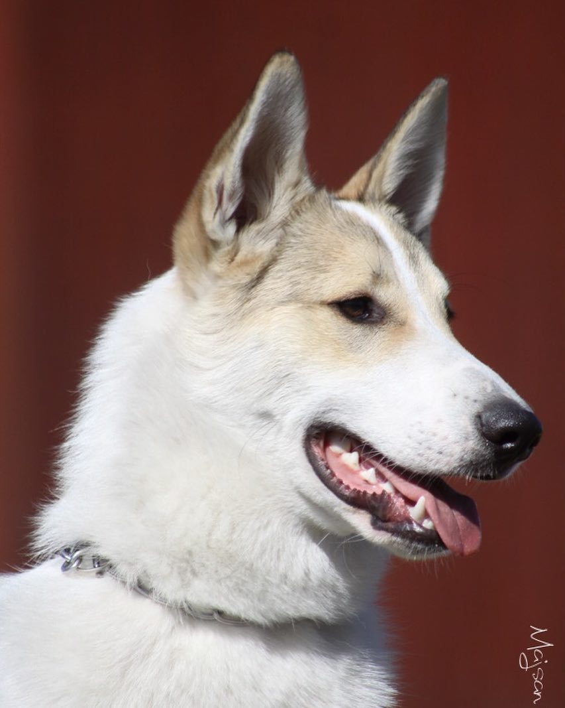

Западносибирская лайка — порода собак, универсальная охотничья лайка, самая многочисленная из лаек. Происходит от аборигенных лаек таёжных районов Западной Сибири, сформирована как заводская порода в середине XX века. Благодаря эффектной внешности и исключительным охотничьим качествам, собаки этой породы популярны во всём мире, используются для охоты в лесу на пушного, копытного, хищного зверя, помогают в охоте на пернатую дичь. Могут содержаться в качестве собак-компаньонов.
Как и другие породы лаек, западносибирская лайка происходит от волков-аутсайдеров, потомков которых использовали охотники ханты и манси в царской России. Официальное описание русских лаек с весьма запутанной систематикой пород на основе предложенного А. А. Ширинским-Шихматовым этнографического принципа опубликовано в 1925 году. В 1939 году сформулированы и приняты на Всесоюзном кинологическом совещании временные стандарты пяти пород лаек и началась целенаправленная деятельность по их разведению. В рамках систем «Заготживсырьё» и Центросоюза в 1942 году было создано около семидесяти государственных племенных питомников промысловых собак с плановым поголовьем 1800 собак всех пород. В 25 питомниках разводили исключительно лаек, в 27 питомниках поголовье лаек преобладало. Благодаря этим питомникам племенной материал удалось сохранить в годы Великой Отечественной войны.
| Пол | Рост в холке | Вес |
|---|---|---|
| Кобели | 55-62 см | 16-20 кг |
| Суки | 51-58 см | 18-20 кг |
Западно-сибирские лайки легко переносят русские морозы и вполне адаптированы к экстремальным погодным условиям, так что лучшим местом жительства для рабочей собаки будет вольер во дворе частного дома. Кроме того, для комфортного существования собаки требуется много свободного пространства, поэтому вариант заселения питомца в квартиру расценивается, как худший из возможных. Важно также понимать, что в отличие от своих русско-финских собратьев, западно-сибирские лайки с трудом привыкают к жизни в условиях мегаполиса, да и вообще любого города. Этим собакам больше по душе сельская местность или хотя бы городская окраина.
Западно-сибирская лайка – не самая дорогая порода. В среднем здоровый, привитый щенок с документами обойдется в 15 000-20 000 руб. Если экстерьер будущего питомца не столь важен, можно обращаться не в питомник, а к заводчику-одиночке.
Если у вас есть вопросы, свяжитесь с нами через электронную почту.